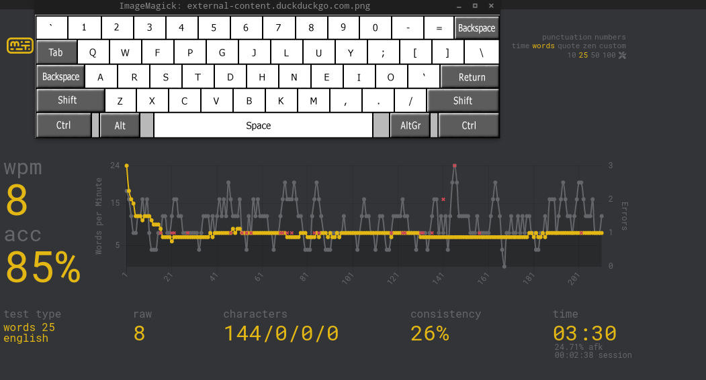
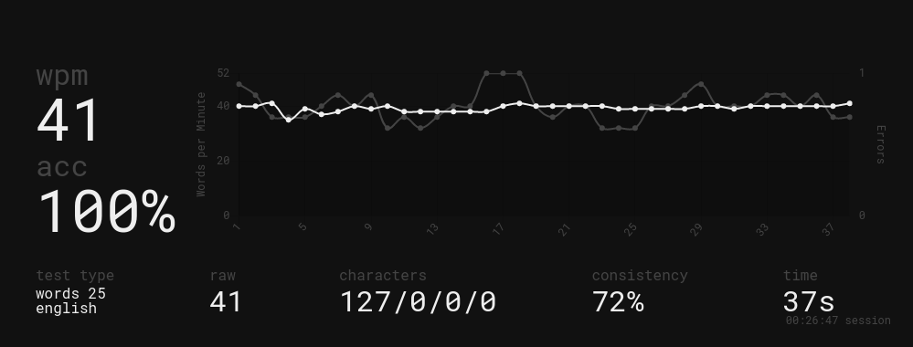

Using The Colemak Keyboard Layout - Week 1
2022-01-26
Why?
Why not? While QWERTY works perfectly for me right now, I want to challenge myself to use a different layout to prove to myself that I am capable.
My Journey Thus Far
I started about a week ago, and to raise the stakes, I challenged my friend Nathaniel to do the same. I stuck with QWERTY for work, but whenever I wasn't in a rush, I used Colemak. Switching layouts is really easy as I have a simple shortcut for the layouts. This way, if someone needs to use my PC, they can use it without going through the pain.
My first few attempts went terribly as expected. I had the layout overlaid over Monkeytype so that I could see it without having to change any keycaps or anything.

After about 30 minutes, I was able to type around 10 wpm on average.
The next day, I tried typing without the layout overlaid, and achieved 14 wpm. Every day, I would practice on Monkeytype for at least 15 minutes and would increase my wpm little by little. At this point, Nathaniel and I were neck and neck. But at 3 am on Monday, he managed to go from 24 wpm to 35 wpm, and during the day, he achieved 45 wpm. To clarify, he is better at typing than me; his QWERTY speed is about 95 wpm vs. my 75. Despite that, he and I were shocked. I tried to catch up, and even today, I have yet to reach him. On the bright side, I can now average around 30 wpm, and my personal best is 41 wpm.

Goals For Next Week:
-
Achieve a new PB of at least 50 wpm
-
Average 40 wpm
-
Use Colemak casually more
*By the way I wrote all this in Colemak and it took ~30 min